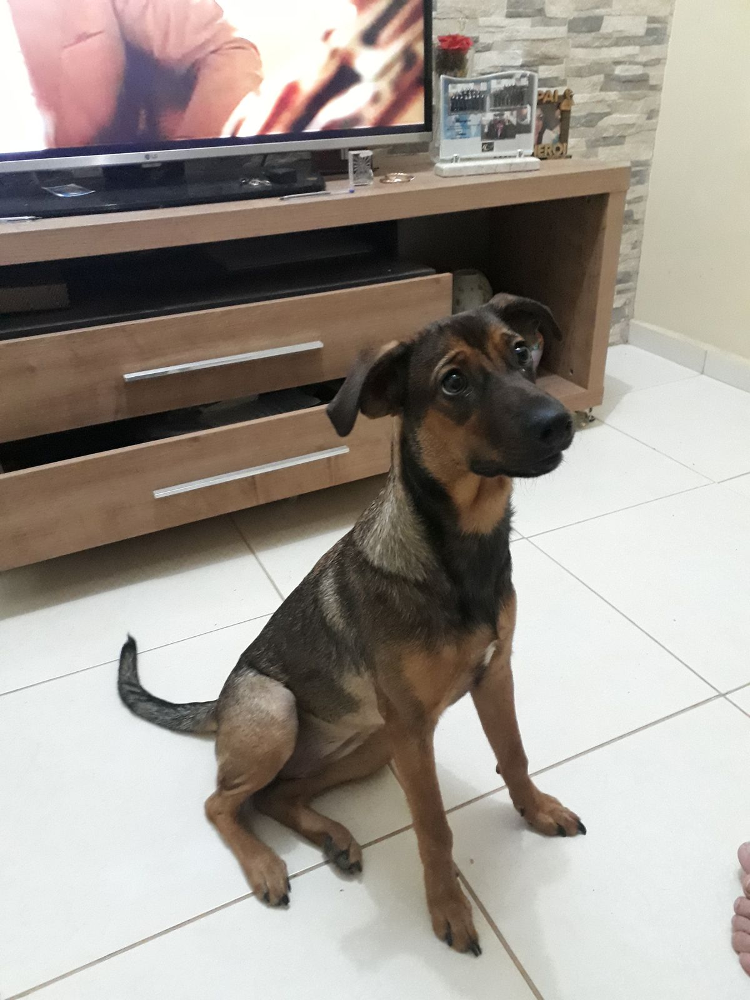
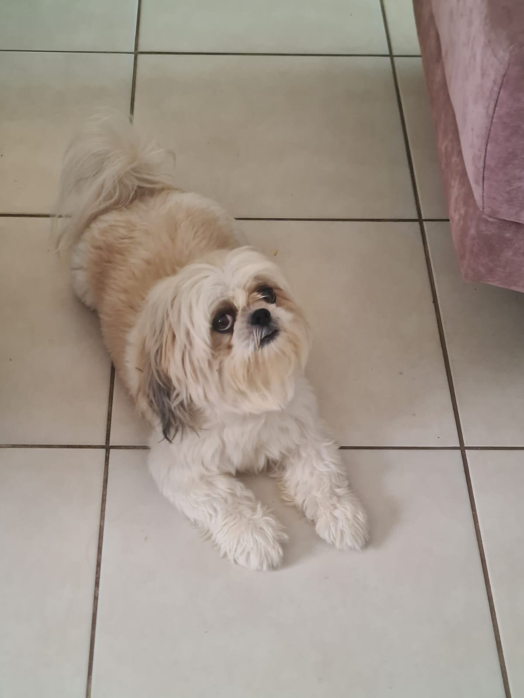

Animais disponíveis para adoção:

Amora, 4 anos
Fêmea | Jovem | Porte Médio
Lua, 3 anos
Fêmea | Jovem
Dito, 11 anos
Macho | Adulto | Porte Médio
Mike, 4 meses
Macho | Filhote
Tiffany, 2 anos
Fêmea | Filhote | Porte Pequeno
Tony, 3 anos
Macho | Jovem
Stela, 2 meses
Fêmea | Filhote
Wolf Supremo, 100 anos
Macho | Ancião | Porte Gigante
Zorro, 2 meses
Macho | Filhote
Jully, 4 anos
Fêmea | Jovem | Porte Médio
Pérola, 6 anos
Fêmea | Jovem | Porte Médio
Pitoco, 3 anos
Fêmea | Jovem | Porte Médio
Kiara, 11 meses
Fêmea | Filhote | Porte Pequeno

Kenay, 4 anos
Macho | Jovem | Porte Pequeno
Fairy, ∞
Fêmea | Mystical